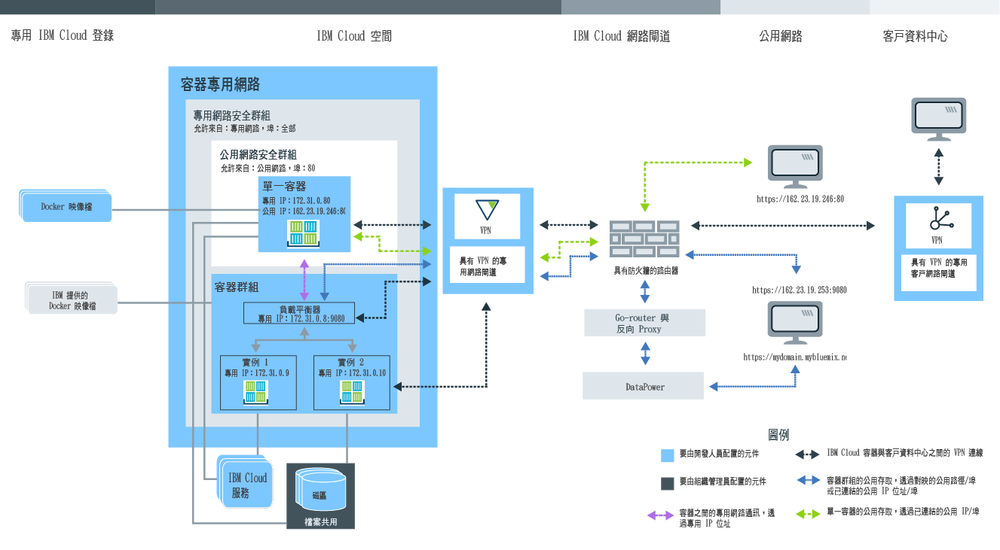

計劃使用 單一及可擴充容器
瞭解使用者角色
容器是由組織管理員及容器開發人員管理。下列映像檔顯示組織的範例容器配置，並強調顯示組織管理員或容器開發人員可以設定的元件。
請檢閱本主題的各小節，以取得每個元件及您可進行之決策和配置的相關資訊。建立容器之後，將無法變更其中部分配置。事先知道這些配置，可協助您確保所有資源（例如記憶體、磁碟空間及 IP 位址）可供開發團隊使用，以及充分利用組織配額。管理 IBM Bluemix Container Service 的 Bluemix 組織
在 Bluemix 中，您可以使用組織，讓團隊成員之間進行協同作業，以及協助專案中的雲端資源進行邏輯分組。每個組織都會獲指派一個組織管理員，負責設定開發環境（空間），以及授權團隊成員存取所需要的雲端資源，以順利建立其應用程式的容器。此設定包括指派公用 IP 位址、資料儲存空間及容器記憶體。身為組織管理員，您還可以檢視雲端資源的現行配額及用量，並視需要加以調整。
- 將組織內的管理者 角色授與使用者，以指派組織管理程式。
- 將空間內的開發人員 或審核員 角色授與使用者，以指派容器建立者。
為專用 Bluemix 登錄設定組織的名稱空間
若要儲存及管理 IBM Bluemix Container Service 的專用映像檔，每個組織都必須在 Bluemix 中設定自己的專用 Docker 映像檔登錄。專用登錄的這個名稱稱為名稱空間，在 Bluemix 內必須是唯一的。
當您選擇組織的名稱空間時，請考量下列規則。
- 您的名稱空間在 Bluemix 中必須是唯一的。
- 名稱空間的長度可為 4-30 個字元。
- 名稱空間的開頭必須至少使用一個字母或數字。
- 名稱空間只能包含小寫字母、數字或底線 (_)。
從 Bluemix GUI 中，遵循下列步驟。
登入 IBM Bluemix Container Service 之後，從 CLI 執行下列指令：
擷取組織的名稱空間
如果已設定組織的名稱空間，您可以從 Bluemix GUI 或 CLI 擷取它。
從 Bluemix GUI 中，遵循下列步驟。
從 CLI 中，登入 IBM Bluemix Container Service 服務，然後執行下列指令。
配額及 Bluemix 帳戶
Bluemix 中的每個組織，其容器記憶體、公用 IP 位址、檔案共用和組織的所有空間所共用的服務數目都有預設值。這些預設值稱為配額。
Bluemix 帳戶類型
| 帳戶類型 | 說明 |
|---|---|
| 免費試用 | 不提供單一及可擴充容器的免費試用。瞭解在「Bluemix 公用」上，如何在 IBM Bluemix Container Service 中進行叢集管理並移轉至 Kubernetes。 |
| 隨收隨付制 | 如果您註冊「隨收隨付制」帳戶，則只會針對所使用的 Bluemix 資源付費。 |
| 訂閱 | 如果您註冊「訂閱」帳戶，即承諾每個月的最低消費金額，並獲得適用於該最低收費的訂閱折扣。您同時會針對任何超出最低消費金額的用量付費。 |
| Bluemix 專用 | 使用「Bluemix 專用」，您必須註冊至少一年的期間。您於該期間內每個月所支付的金額是根據您想要的專用服務，再加上讓您存取所有公用服務的訂閱帳戶。 |
| Bluemix 本端 | 使用「Bluemix 本端」，您必須註冊至少一年的期間。您於該期間內每個月所支付的金額是根據您想要的本端服務，再加上讓您存取所有公用服務的訂閱帳戶。 |
付費帳戶的預設配額
| 資源 | 付費帳戶配額限制 |
|---|---|
| 公用 IP 位址 | 64 |
| 容器記憶體 | 64 GB 註： 空間中的每個容器都有助於配額的使用（不論容器是否在執行中）。若要釋出記憶體，您必須移除未用的容器。
|
| 檔案共用 | 10 個檔案共用 |
| 容器及容器群組 | 無限制數量 註： 容器及容器群組的大小會計入容器記憶體限制，但您不受限於特定的容器數量。
|
| 映像檔 | 25 註： IBM 映像檔不計入專用 Bluemix 登錄的映像檔數目限制。
|
| 空間 | 無限制數量 註： 每個空間至少需要 2 個公用 IP 位址及 2 GB 容器記憶體，而這些是在您登入新的空間並嘗試搭配使用該空間與 IBM
Bluemix Container Service 時自動配置。這些資源會計入配額中，但您不受限於特定的空間數量。
|
配置空間的配額
- 從帳戶詳細資料的「管理組織」中，選取組織。
- 在「配額」區段中，檢視容器的詳細資料。
- 在配額配置表格中，按一下編輯按鈕，以變更每個空間所配置的配額。
- 按一下儲存按鈕，以儲存變更。
充分利用配額的提示
- 請確定移除未使用的容器，使其配置不計入配額。如需相關資訊，請參閱移除單一容器、移除容器群組及移除多容器應用程式。
- 若不得從網際網路存取您的容器，請不要將公用 IP 位址連結至您的容器。
- 若要減少公用 IP 位址用量，請考慮使用容器群組來取代單一容器。容器群組會使用路徑，進行未受限於 IP 位址配額的公用存取。如需相關資訊，請參閱從 Bluemix GUI 將長期服務當作容器群組來執行。
持續資料儲存空間
組織管理員可以建立具有特定儲存空間大小和 IOPS 的檔案共用，以符合空間的儲存需求。檔案共用佈建時，可以使用 20 GB 到 12 TB 的大小，以及每 GB 0.25、2 或 4 的 IOPS。相對於 IOPS 數的檔案共用大小會影響在容器磁區讀寫資料的速度。
在 Bluemix 中使用 IBM Bluemix Container Service 建立容器
若要在 Bluemix 中使用 IBM Bluemix Container Service 建立可執行應用程式的容器，您必須已獲授與開發人員權限才能使用組織空間。身為應用程式的開發人員，務必知道容器元件之間的關係，以及如何變更容器的配置，以滿足應用程式的功能與非功能需求。
Bluemix GUI、指令行及 REST API
當您計劃使用 IBM Bluemix Container Service 時，可以使用 Bluemix GUI、安裝指令行介面 (CLI)，或針對 REST API 傳送 HTTP 要求，來存取 IBM Bluemix Container Service。
Bluemix GUI 及 CLI 可以用來完成 IBM Bluemix Container Service 中的大部分作業。不過，有些作業只能透過 Bluemix GUI 或 CLI 來執行。因此，請準備同時使用這兩者來管理您的容器。
如果您不想使用 Bluemix GUI，也不想使用 CLI，則可以將 HTTP 要求直接傳送至 IBM Bluemix Container Service API 伺服器，以使用 REST 來管理容器。
下表顯示需要 Bluemix GUI、IBM Bluemix Container Service CLI 或 REST API 的所有容器相關作業。所有方法都可以執行這裡未列出的作業。| 作業 | GUI | CLI | API |
|---|---|---|---|
| 檢閱映像檔漏洞 |  |
 |
|
| 將映像檔推送至登錄 | |
|
|
| 從登錄中取回映像檔 | |
|
|
| 複製 Docker Hub 中的映像檔 | |
|
|
| 變更配額配置 | |
|
|
| 擷取組織及空間特定配額 | |
|
|
| 檢視詳細日誌資訊 | |
|
|
| 指定其他日誌 | |
|
|
| 自訂日誌 | |
|
|
| 登入執行中容器 | |
|
|
| 使用 Docker Compose | |
|
|
| 列出空間的磁區 | |
|
|
| 將檔案寫入磁區 | |
|
|
| 刪除磁區 | |
|
|
| 擷取系統訊息 | |
|
|
安裝 CLI
安裝及配置 IBM Bluemix Container Service CLI，以從 CLI 來管理容器。
透過 REST API 管理容器
使用 IBM Bluemix Container Service API，以利用 REST 來處理單一容器及容器群組。
IBM 公用、Docker Hub 及專用映像檔
容器映像檔是您建立的每個容器的基礎。映像檔是從 Dockerfile 建立的，Dockerfile 檔案中包含建置映像檔以及建置構件（例如應用程式、應用程式的配置及其相依關係）的指示。請將容器映像檔想像成執行檔（.exe 或 .bin）。執行這個可執行的應用程式檔案之後，即會建立應用程式的實例。當您執行容器時，會從映像檔建立容器實例。容器映像檔儲存在專用 Bluemix 登錄中，而且只能從 CLI 新增。您要使用的每個容器映像檔都必須位於登錄中，您才能從中建立容器。
- IBM 公用映像檔
- 從 IBM Bluemix Container Service 所提供的其中一個 IBM 公用映像檔（例如 IBM Liberty 及 IBM Node 映像檔）開始測試 IBM Bluemix Container Service 的特性。然後，您可以使用其中一個映像檔作為主映像檔，修改 Dockerfile，建置您自己的映像檔，上面有您自己的應用程式碼。
- Docker Hub 中的映像檔
- 從 Docker Hub 直接複製映像檔到專用 Bluemix 登錄，或從 Docker Hub 取回映像檔，在本端進行修改，然後直接在登錄中建置。
- 建立您自己的映像檔
- 如果您有已在本端 Docker 環境中使用的容器映像檔，則可以將它們推送至專用 Bluemix 登錄，以在 IBM Bluemix Container Service 中使用它們。您也可以建立自己的 Dockerfile，在本端進行建置及測試，然後將它推送至專用映像檔登錄。
檢視專用映像檔登錄中的映像檔
您可以使用 Bluemix GUI 或 CLI，檢視專用 Bluemix 映像檔登錄中可用的所有容器映像檔。
- 從 Bluemix GUI 中，依序選取型錄及容器。您可以查看 IBM 所提供的映像檔，以及先前推送至專用 Bluemix 登錄的映像檔。
- 從 CLI 中，執行 bx ic images。
檢閱映像檔漏洞
防止容器關閉的 Dockerfile 提示
IBM Bluemix Container Service 提供許多特性以保持容器安全，以及管理使用者的雲端資源。視應用程式而定，可能需要將額外配置新增至 Dockerfile，以確保本端容器可以在 Bluemix 中順利執行。
- 準備網路延遲
- 容器啟動時，IBM Bluemix Container Service 會設定專用容器網路，並將專用 IP 位址指派給容器。此處理程序可能需要數秒的時間。如果您的應用程式在應用程式啟動時需要作用中網路連線，請將 sleep 指令新增至 Dockerfile，確保已事先完成 IBM Bluemix Container Service 網路設定。
- 使用長時間執行指令
- 若要讓容器開始進行，至少需要在容器映像檔中包含一個長時間執行程序。例如，echo "Hello world" 是簡短的執行中程序。 如果映像檔中未指定任何其他指令，則在執行該指令之後容器會關閉。若要將 echo "Hello world" 指令轉換成長時間執行程序，例如，您可以使它形成多重迴圈，或將 echo 指令包含在您應用程式內的另一個長時間執行程序中。
IBM Bluemix Container Service 中的專用容器網路設定
容器專用網路為在同一空間執行的單一容器和容器群組建立一個隔離的安全環境。使用專用 IP 位址，連接至相同專用網路的容器，即可與專用網路中的其他容器彼此之間傳送及接收資料。必須等到已連結單一容器的公用埠與公用 IP 位址或容器群組的公用路徑之後，才能公開使用容器。
- IBM Bluemix Container Service 預設專用網路設定
- 在 Bluemix 中，已為每個空間提供容器專用網路，套用了預設的 IBM Bluemix Container Service 網路設定。這些設定包含自動設定預設「專用網路安全群組」，該預設「專用網路安全群組」使用專用 IP 位址來容許容器與容器群組之間的專用網路通訊。當您在空間中建立容器或容器群組時，它們就會自動連接至預設 IBM Bluemix Container Service 專用網路，並獲指派來自子網路 172.31.0.0/16 的專用 IP 位址。指派專用 IP 位址之後，相同網路中的所有容器都可以使用單一容器的專用 IP 位址，以透過所有容器埠安全地通訊，或者，如果使用容器群組，則為群組負載平衡器的專用 IP 位址。不需要將容器埠對映至主機埠。
- 將容器連接至組織資料中心的「虛擬專用網路」
- 利用 IBM® 虛擬專用網路 (VPN) 服務，將 Bluemix
中，專用容器網路中的單一容器和容器群組安全地連接到組織資料中心。IBM
VPN 在根據業界標準網際網路通訊協定安全 (IPsec) 通訊協定套組的網際網路上，提供安全的端對端通訊通道。IPsec 通訊協定是透過在 VPN 端點之間加密交換的套件，來提供網路層次對等節點鑑別、資料完整性和資料機密性。若要設定 Bluemix 和組織資料中心的容器之間的安全連線，您必須已在內部部署的資料中心中安裝 IPsec VPN 閘道或 SoftLayer 伺服器。利用 IBM
VPN 服務，您可以對每個空間配置一個 VPN 閘道，並定義最多 16 條連線通往不同的目的地。
若要在 Bluemix 中設定容器的安全 VPN 連線，請參閱 IBM VPN。
啟動容器時處理網路延遲的提示
容器啟動時，IBM Bluemix Container Service 會設定專用容器網路、公開容器埠，以及將專用 IP 位址指派給容器。此處理程序可能需要數秒的時間。如果您的應用程式在應用程式啟動時需要作用中的網路連線，則可能尚未設定容器專用網路，這樣可能會導致應用程式損毀。若要確保 IBM Bluemix Container Service 網路設定在應用程式啟動之前完成，請考慮實作下列其中一個解決方案來處理網路延遲。
- 將 sleep 指令新增至容器啟動時所執行的 Dockerfile。
在下列範例 Dockerfile 中，容器會先等待 60 秒，再啟動應用程式。
FROM sdelements/lets-chat:latest CMD (sleep 60; npm start) - 調整您的應用程式碼，以檢查是否有作用中的網路連線功能（例如，先對公用 IP 位址進行連線測試，再啟動此應用程式）。如果您無法對 IP 位址進行連線測試，請休眠數秒，然後再試一次。如果可以解析 IP 位址，請啟動應用程式。
決定公用網路設定
依預設，IBM Bluemix Container Service 中的每個單一容器和容器群組都可用於專用網路。不過，您的應用程式可能需要從網際網路存取，或者您想要存取您組織的其他空間中的容器。在這些情況下，您必須將容器公開給大眾使用。視您選擇的容器類型而定，有不同的方式可讓容器供大眾使用。
單一容器及 Docker Compose 公用網路設定
您在空間中建立的所有單一容器都會獲指派一個專用 IP 位址，您只能用它來存取專用網路中的容器。專用網路通訊是透過不容許任何進入及離開公用網路的網路資料流量的預設「專用網路安全群組」所保護。如果您要讓應用程式可供公用網路使用，您必須公開公用埠，並將公用 IP 位址連結至您的容器。
必須要求公用 IP 位址，空間才會連結至容器。要求公用 IP 位址時，會將公用 IP 位址儲存區中的隨機公用 IP 位址配置給空間。配置給空間時，IP 位址不會變更。若要將公用 IP 位址連結至容器，您也必須在 bx ic run 指令中使用 -p 選項，以公開 HTTP 埠。公開埠時會建立容器的「公用網路安全群組」，讓您可以僅透過公開埠傳送及接收公用資料。所有其他公用埠都會關閉，因此無法用來從網際網路存取應用程式。
空間可用的公用 IP 位址數目，視您組織的配額而定。
bx ic ips- 空間中沒有可用的公用 IP 位址
- CLI 輸出：
IP Address Container ID - 我的選項：要求新的公用 IP 位址，並將它連結至您的容器。
bx ic ip-requestbx ic ip-bind <IP_ADDRESS> <CONTAINER>
- CLI 輸出：
- 空間中有可用的公用 IP 位址，但它未連結至容器
- CLI 輸出：
IP Address Container ID 192.0.2.56 - 我的選項：將公用 IP 位址連結至容器。
bx ic ip-bind <IP_ADDRESS> <CONTAINER>
- CLI 輸出：
- 空間中有可用的公用 IP 位址，但它已連結至容器
- CLI 輸出：
IP Address Container ID 192.0.2.56 d7b4a167-8e51-4b16-b591-1a17cb7ee41f - 我的選項：
- 取消容器中已連結 IP 位址的連結，並將它連結至新容器。
bx ic ip-unbind <IP_ADDRESS> <CONTAINER>bx ic ip-bind <IP_ADDRESS> <CONTAINER> - 要求新的公用 IP 位址，並將它連結至您的容器。
bx ic ip-requestbx ic ip-bind <IP_ADDRESS> <CONTAINER>
- 取消容器中已連結 IP 位址的連結，並將它連結至新容器。
- CLI 輸出：
容器群組公用網路設定
若要將容器群組設成可從網際網路進行存取，您必須公開埠，並將公用路徑或公用 IP 位址與其連結。
- 含預設網域的公用路徑
- 公用路徑是由主機和網域名稱組成，並包含您在 Web 瀏覽器中輸入的完整公用 URL，以存取容器群組。每個路徑在 Bluemix 中都必須是唯一的。
在容器建立期間，您可以選擇路徑的主機名稱，例如 mycontainerhost。預設系統網域是 AppDomainName，並且已提供 SSL 憑證，讓您可以使用 HTTPS 存取容器群組，而不需要進行任何其他配置。
範例：https://mycontainerhost.AppDomainName
註： 若要使用公用路徑，您必須在建立期間公開容器群組的 HTTP 埠。無法公開非 HTTP 埠。您只能公開每個容器群組的一個公用埠。不支援容器群組的多個公用埠。 - 含自訂網域的公用路徑
- 如果您要使用自己的自訂網域，而非預設網域 AppDomainName，您必須在公用 DNS
伺服器上登錄自訂網域、在 Bluemix 中配置自訂網域，然後將自訂網域對映至公用 DNS 伺服器上的 Bluemix 系統網域。將自訂網域對映至 Bluemix 系統網域之後，對該自訂網域的要求即會遞送至 Bluemix 中的應用程式。建立自訂網域時，請不要在網域名稱中包含底線 (_)。
若要建立自訂網域，請參閱建立及使用自訂網域。
若要讓您的自訂網域更為安全，請上傳 SSL 憑證，以使用 HTTPS 來存取您的容器群組。
- 公用 IP 位址
- 使用指令行建立容器群組時，您也可以連結 IP 位址。您只能將公用路徑或浮動 IP 位址連結至容器，而非同時兩者。若要移除容器群組中的 IP 位址，您必須移除容器群組，然後重新建立群組。以下範例建立具有公用 IP 位址的容器群組：
bx ic group-create -p 9080 --ip 192.0.2.56 --name my_container_group registry.DomainName/ibmliberty
整合 Bluemix 服務以便與容器搭配使用
Bluemix 提供不同服務讓您與 IBM Bluemix Container Service 搭配使用，以將額外功能帶進應用程式，或簡化應用程式的實作及容器的管理。
- 從 Bluemix 使用者介面中，選取 Bluemix「型錄」。
- 從 CLI 執行 cf marketplace 指令。
若要取得協助您管理容器的服務的相關資訊，請參閱整合服務與單一及可擴充容器。
持續性資料儲存空間選項
決定在何處儲存應用程式建立的資料或應用程式需要執行的檔案。
| 資料儲存選項 | 說明 | 可儲存的資料量受限於 |
|---|---|---|
| 選項 1：在執行時將資料儲存在容器內 | 使用此選項，不會持續保存應用程式資料。容器只能在執行時使用資料。重建容器之後，所有資料都會遺失。 | 容器的大小 |
| 選項 2：將資料儲存在容器磁區 | 在 Docker 中裝載磁區時，會將磁區裝載到本端檔案系統。在 IBM
Bluemix Container Service 中，運算主機的存取權受限，因此您無法將主機目錄裝載到容器。而是使用組織範圍的磁區，在容器重新啟動之間持續保存資料。磁區會在隔離檔案共用上管理，這些檔案共用可安全地儲存應用程式資料，以及管理對檔案的存取權和許可權。由於這項隔離，容器內的非
root 使用者必須獲得授與裝載磁區的寫入權。 使用此選項，您可以在容器重新啟動之間持續保存及存取資料，以及在空間的容器之間共用資料。刪除容器之後，不會移除關聯的磁區。 註： 若要將磁區裝載至容器，您必須先建立磁區，請參閱使用 Bluemix GUI 建立磁區。
|
管理磁區的檔案共用的大小 |
| 選項 3：將容器連接至內部部署資料庫 | 使用此選項，您可以使用雲端與本端環境的容器之間的安全 VPN 連線，在現有的內部部署資料庫中持續保存及存取資料。 | 內部部署資料庫可用的磁碟空間 |
| 選項 4：將 Bluemix 資料庫服務連結至容器。 | 使用此選項，您可以使用鏈結到雲端之容器的資料庫服務來持續保存及存取資料。大部分 Bluemix 資料庫服務會免費提供少量資料的磁碟空間，讓您可以測試其特性。 | 您選擇的資料庫服務及方案 |
對 Bluemix 中容器磁區的非 root 使用者存取權
若為 IBM Bluemix Container Service，已對 Docker Engine 啟用使用者名稱空間特性。使用者名稱空間提供隔離功能，讓容器 root 使用者無法存取其他容器或運算主機。不過，磁區位於容器運算主機外部的 NFS 檔案共用上。磁區設定成辨識容器中的 root 使用者，但因為磁區是在容器外部，所以無法得知使用者名稱空間。
對於一些應用程式，容器內的唯一使用者就是 root 使用者。不過，許多應用程式會指定寫入至容器裝載路徑的非 root 使用者。如果您是使用需要磁區寫入權的非 root 使用者來設計應用程式，則必須將下列處理程序新增至 Dockerfile 及進入點 Script：
- 建立非 root 使用者。
- 暫時將使用者新增至 root 群組。
- 使用正確的使用者許可權在磁區裝載路徑中建立目錄。
如需相關資訊，請參閱使用適當的非 root 許可權自行建立 Dockerfile。
容器類型
使用 IBM Bluemix Container Service 建立容器之前，請決定您需要的容器類型。IBM Bluemix Container Service 提供不同的方法以在雲端中建立容器。您選擇的方法取決於容器中執行的應用程式的需求和相依關係。
單一容器
IBM Bluemix Container Service 中的單一容器類似您在本端 Docker 環境中建立的容器。若要開始使用 IBM Bluemix Container Service、瞭解容器在 IBM Cloud 中如何運作，以及瞭解 IBM Bluemix Container Service 所提供的特性，單一容器是不錯的方式。您也可以使用單一容器來執行簡單的應用程式測試，或在應用程式的開發過程中使用它們。因為單一容器可以重新予以啟動，而且不是用於管理長時間執行的程式，所以您必須將容器群組用於任何需要高可用性的應用程式。
- 映像檔大小具有重大影響。映像檔越小，部署就越快。
- 前幾次部署映像檔之後，可改善部署速度。一開始，必須將映像檔下載至主機上的登錄。後續部署的速度會比較快。
- 網路設定可能需要幾分鐘的時間。
- 因為群組的遞送設定，單一容器的部署速度會比容器群組還要快。
- 因為必須進行的連線，所以具有所鏈結容器的部署可能不會像其他部署一樣快。
若要從 Bluemix GUI 建立單一容器，請參閱將短期作業當作單一容器來執行。
若要從 CLI 建立單一容器，請參閱使用指令行介面 (CLI) 將短期作業當作單一容器來執行。
容器群組
容器群組由多個單一容器組成，它們全部都是從相同的容器映像檔建立，因此是以相同的方式配置。
容器群組免費提供進一步的選項，可讓您的應用程式具有高可用性。
若要更進一步提高容器群組的可用性，您可以建立另一個容器群組，以相同映像檔為基礎，並對映至相同路徑。第一個容器群組損毀時，第二個容器群組可以接管整個工作負載。請選擇下列其中一個選項，以將第二個容器群組分散到 IBM Bluemix Container Service 架構中。- 映像檔大小具有重大影響。映像檔越小，部署就越快。
- 前幾次部署映像檔之後，可改善部署速度。一開始，必須將映像檔下載至主機上的登錄。後續部署的速度會比較快。
- 網路設定可能需要幾分鐘的時間。
- 因為遞送設定，單一容器的部署速度會比容器群組還要快。
- 未連結至路徑的容器群組的部署速度會比沒有路徑的容器群組還要快。
- 未啟用反親緣性的容器群組的速度會比具有反親緣性的容器群組還要快。使用反親緣性，指定的主機數目每一個都必須下載映像檔層。
若要從 Bluemix GUI 建立容器群組，請檢閱從 Bluemix GUI 執行容器群組主題。
若要從 CLI 建立容器群組，請參閱從 CLI 執行容器群組。
容器群組的負載平衡
容器群組提供內建的負載平衡，將送入的資料流量平均（循環式）遞送至群組中的容器實例。若已建立容器群組，或已將實例新增至現有群組，則不論是自行新增實例，還是在自動回復期間重建實例，都會啟用負載平衡。


- A ：具有三個實例的容器群組
- B ：容器群組的負載平衡器
- 1、2、3 ：容器群組中的實例
將新的實例新增至容器群組之後，負載平衡器會建立 TCP Socket 連線，以決定何時開始將資料流量傳送至新的容器實例。容器實例開始接聽其定義的埠之後，負載平衡器即會開始將資料流量傳送至該實例。負載平衡器會將專用 IP 位址指派給群組，讓相同空間中的其他容器或服務可以存取該群組。
因為此專用 IP 位址是指派給群組，而非個別實例，所以將實例新增至群組或在自動回復期間重建實例時，專用 IP 位址不會變更。您可以執行 bx ic group-inspect 來尋找這個專用 IP 位址。
容器群組的反親緣性
在 bx ic group-create 指令中使用 --anti 選項，即可選擇在建立容器群組時是否啟用反親緣性特性。
啟用反親緣性時，容器實例會分散到不同的實體運算節點，如此可降低容器因硬體故障而損毀的可能性。
若要從 CLI 使用 --anti 選項，您必須已安裝 IBM Bluemix Container Service 外掛程式 (bx ic) 0.8.934 版或更新版本。您可能無法對較大的群組大小使用此選項，因為每一個 Bluemix 地區及組織可以部署的運算節點有限。如果部署不成功，請減少群組中的容器實例數目，或移除 --anti 選項。
容器群組的自動回復
在 bx ic group-create 指令中使用 --auto 選項，即可選擇在建立容器群組時是否啟用自動回復。


若已啟用容器群組的自動回復，且群組已執行 10 分鐘，則群組的負載平衡器會透過 HTTP 要求開始定期檢查群組中每一個容器實例的性能。如果容器實例未在 100 秒內回應，則會將其標示為非作用中。非作用中容器實例會從群組中移除，並透過自動回復進行重建。自動回復會嘗試回復群組中的容器實例 3 次。在第三次嘗試之後，自動回復會有 60 分鐘的時間無法回復群組中的任何容器實例。在 60 分鐘之後，就會再次啟動自動回復處理程序。
自動擴充容器群組
容器群組會根據應用程式使用的 CPU 及記憶體來自動擴充容器群組實例。
若要進一步瞭解如何自動擴充容器群組實例，請參閱自動擴充容器群組（已淘汰）。
Docker Compose
部分應用程式由多個元件組成，例如資料庫、服務及快取，其中每一個元件都必須在它自己的容器中執行。因為編排所有容器同時啟動、鏈結及關閉很困難，所以您可以使用 Docker Compose 來配置多容器部署，而且只需要一個指令即可執行。將 Docker Compose 想像成單一容器實例的集合，其中每個容器都是根據它自己的映像檔及配置。配置您的多容器部署一次，然後在 Bluemix 中進行部署。
- 因為正在設定協調的部署，所以 Docker Compose 部署可能不會像其他部署一樣快。
- 映像檔大小具有重大影響。映像檔越小，部署就越快。
- 前幾次部署映像檔之後，可改善部署速度。一開始，必須將映像檔下載至主機上的登錄。後續部署的速度會比較快。
- 網路設定可能需要幾分鐘的時間。
若要使用 Docker Compose 來配置多容器部署，請參閱指導教學：使用 Docker Compose 及 IBM Bluemix Container Service 建立多容器部署。
監視及記載
在 Bluemix 中，容器附有內建的監視及記載，讓您可以密切監看容器的性能。
IBM Bluemix 提供平台型監視和記載功能。您可以從雲端中執行的運算實例（例如容器）或從其他來源中收集度量值和日誌資料。然後，來自多個來源的聚集資料可以透過視覺化產生分析、見解及動作。
- 監視
- 容器度量值是從容器外收集，不需要在容器內部安裝及維護代理程式。容器內代理程式對短期的輕量型雲端實例及自動擴充群組（其中容器可快速建立及破壞）具有顯著的額外需要及設定時間。這種頻外資料收集方法可以免除這些挑戰，並移除使用者的監視負擔。
- 記載
- 容器日誌類似於度量值，是從容器外使用搜索器來進行監視及轉遞。資料由搜索器傳送至 Bluemix 中的多方承租戶 Elasticsearch，正如同其他容器內代理程式所收集的日誌一樣，但沒有必須在容器內安裝代理程式的麻煩。
若要進一步瞭解如何收集日誌及度量值，以及如何建立自訂儀表板，請參閱監視及記載容器